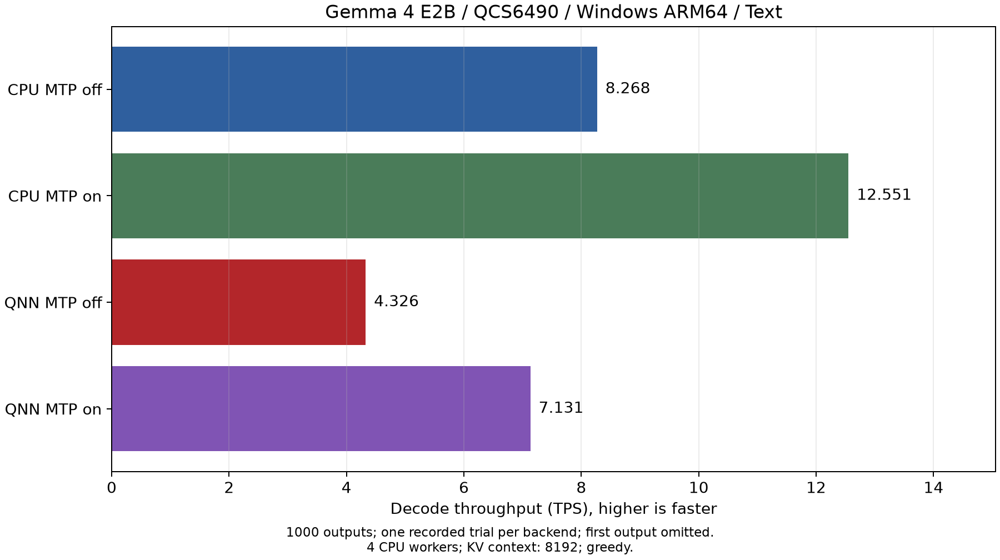
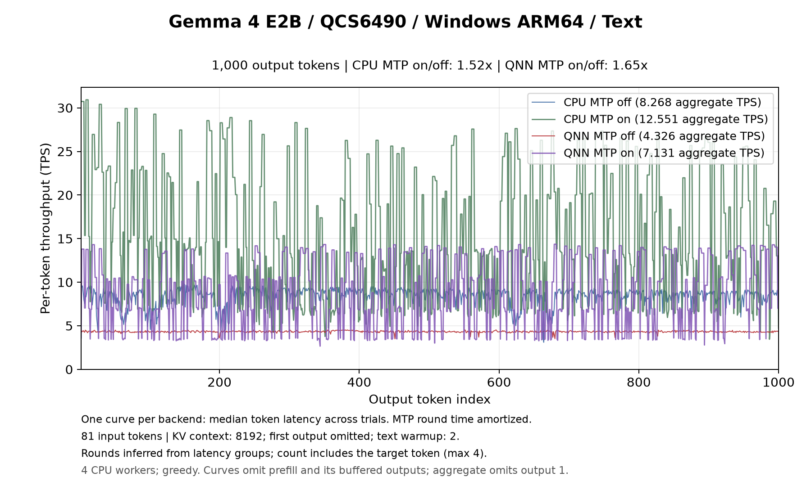
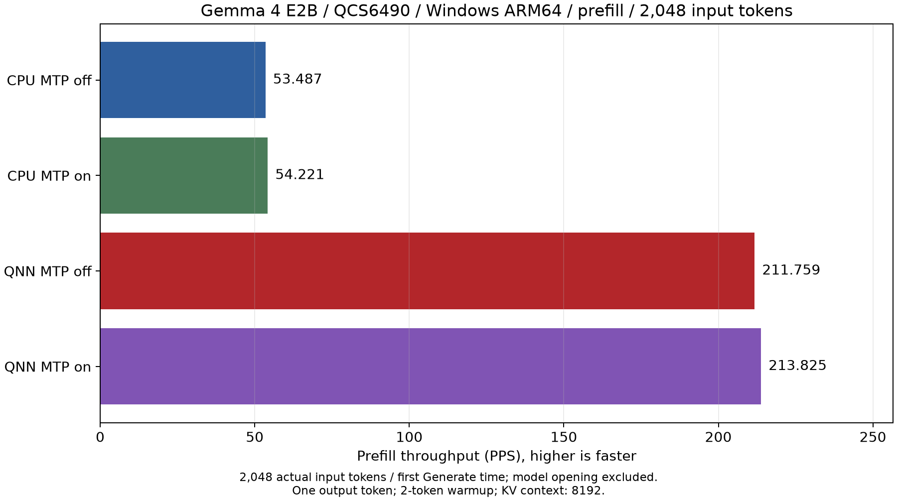
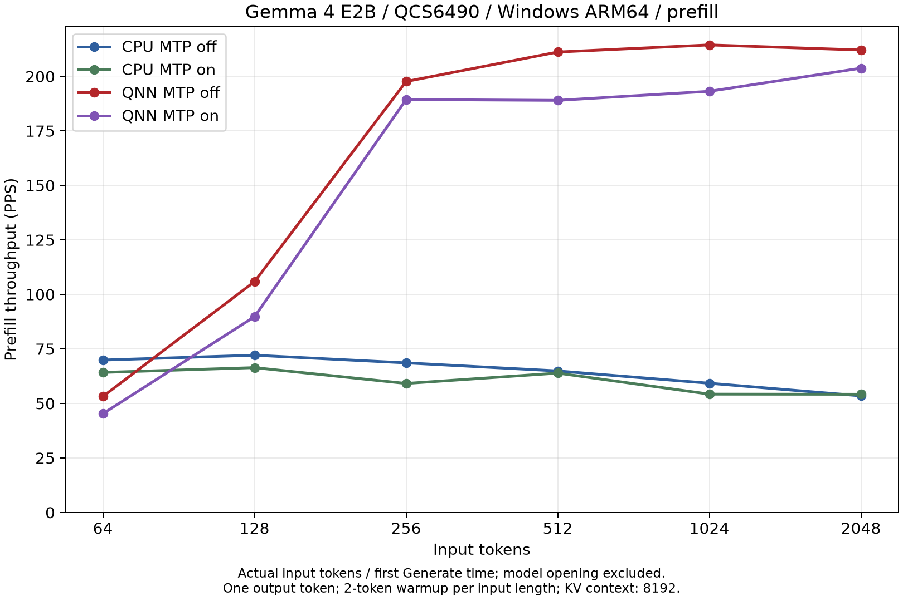
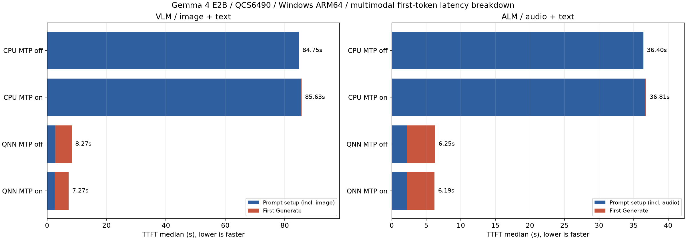
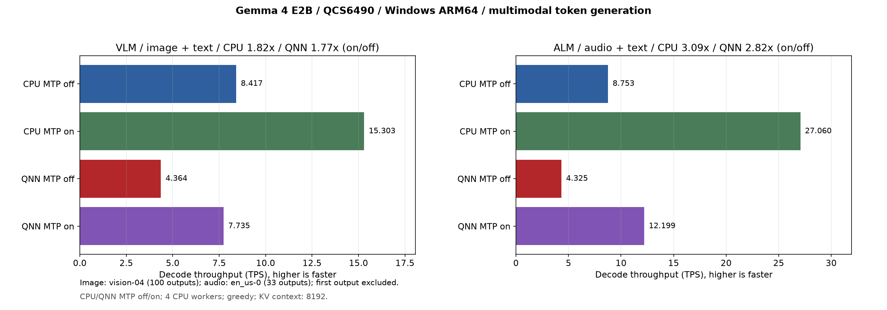
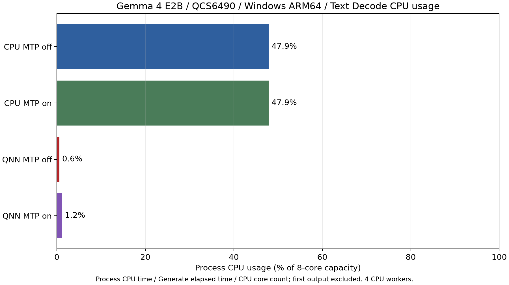
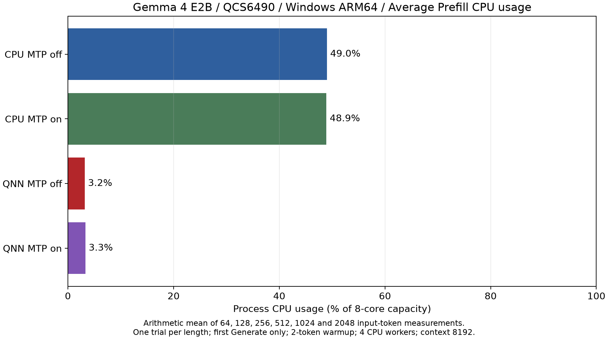
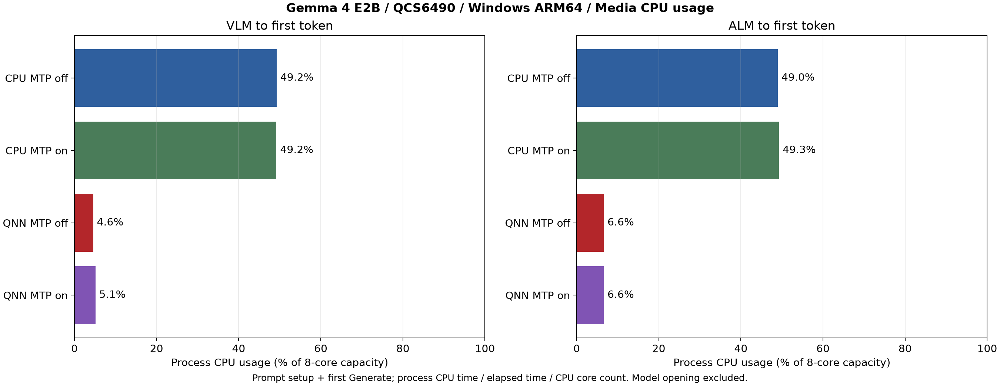

ailia LLM 1.5.1 の MTP（Multi-Token Prediction）を使用した、Qualcomm SoC の NPU と CPU における Gemma 4 の測定結果です。
MTP の仕組みと使い方は ailia LLM MTP ガイド を参照してください。
| 経路 | MTP なし | MTP あり | MTP の効果 | 受理率 |
|---|---|---|---|---|
| CPU | 9.189 tokens/s | 8.658 tokens/s | 0.94 倍 | 31.1% |
| NPU | 6.074 tokens/s | 9.751 tokens/s | 1.61 倍 | 31.6% |


| 経路 | 64 | 128 | 256 | 512 | 1024 | 2048 |
|---|---|---|---|---|---|---|
| CPU（MTP なし） | 35.337 | 33.201 | 32.409 | 31.383 | 29.327 | 27.196 |
| CPU（MTP あり） | 31.128 | 31.366 | 31.310 | 30.978 | 29.101 | 27.040 |
| NPU（MTP なし） | 76.766 | 149.788 | 294.427 | 306.972 | 304.128 | 299.831 |
| NPU（MTP あり） | 77.393 | 155.049 | 306.953 | 307.530 | 304.491 | 300.197 |


| 入力 | 経路 | TTFT | Decode | 受理率 |
|---|---|---|---|---|
| 画像 | CPU（MTP なし） | 33.46 秒 | 8.784 tokens/s | — |
| 画像 | CPU（MTP あり） | 34.00 秒 | 7.701 tokens/s | 28.9% |
| 画像 | NPU（MTP なし） | 7.06 秒 | 5.382 tokens/s | — |
| 画像 | NPU（MTP あり） | 6.92 秒 | 10.476 tokens/s | 41.7% |
| 音声 | CPU（MTP なし） | 21.79 秒 | 9.138 tokens/s | — |
| 音声 | CPU（MTP あり） | 21.65 秒 | 12.712 tokens/s | 80.0% |
| 音声 | NPU（MTP なし） | 4.20 秒 | 5.344 tokens/s | — |
| 音声 | NPU（MTP あり） | 4.53 秒 | 18.054 tokens/s | 100.0% |
NPU（MTP あり）の TTFT は CPU（MTP なし）の 1/4.8（画像）、1/4.8（音声）です。NPU の Decode は MTP により、画像入力で 1.95 倍、音声入力で 3.38 倍になりました。


| 入力 | CPU（MTP なし） | CPU（MTP あり） | NPU（MTP なし） | NPU（MTP あり） |
|---|---|---|---|---|
| テキスト | 48.9% | 48.3% | 2.6% | 4.4% |
| 画像 | 48.7% | 48.1% | 3.7% | 4.8% |
| 音声 | 48.6% | 47.3% | 3.6% | 4.8% |


| 経路 | MTP なし | MTP あり | MTP の効果 | 受理率 |
|---|---|---|---|---|
| CPU | 8.423 tokens/s | 11.336 tokens/s | 1.35 倍 | 31.1% |
| NPU | 6.680 tokens/s | 10.579 tokens/s | 1.58 倍 | 34.8% |


| 経路 | 64 | 128 | 256 | 512 | 1024 | 2048 |
|---|---|---|---|---|---|---|
| CPU（MTP なし） | 57.466 | 54.395 | 51.547 | 47.661 | 37.408 | 33.600 |
| CPU（MTP あり） | 50.451 | 49.910 | 49.452 | 46.387 | 34.608 | 31.654 |
| NPU（MTP なし） | 32.911 | 64.958 | 129.053 | 130.981 | 128.974 | 127.976 |
| NPU（MTP あり） | 33.344 | 66.363 | 132.603 | 132.104 | 130.779 | 129.264 |


| 入力 | 経路 | TTFT | Decode | 受理率 |
|---|---|---|---|---|
| 画像 | CPU（MTP なし） | 17.99 秒 | 8.035 tokens/s | — |
| 画像 | CPU（MTP あり） | 17.74 秒 | 11.046 tokens/s | 28.9% |
| 画像 | NPU（MTP なし） | 8.41 秒 | 6.715 tokens/s | — |
| 画像 | NPU（MTP あり） | 7.85 秒 | 9.713 tokens/s | 30.1% |
| 音声 | CPU（MTP なし） | 14.14 秒 | 7.972 tokens/s | — |
| 音声 | CPU（MTP あり） | 14.10 秒 | 16.313 tokens/s | 80.0% |
| 音声 | NPU（MTP なし） | 7.48 秒 | 6.712 tokens/s | — |
| 音声 | NPU（MTP あり） | 7.56 秒 | 17.268 tokens/s | 92.6% |
NPU（MTP あり）の TTFT は CPU（MTP なし）の 1/2.3（画像）、1/1.9（音声）です。NPU の Decode は MTP により、画像入力で 1.45 倍、音声入力で 2.57 倍になりました。


| 入力 | CPU（MTP なし） | CPU（MTP あり） | NPU（MTP なし） | NPU（MTP あり） |
|---|---|---|---|---|
| テキスト | 49.0% | 48.0% | 2.4% | 4.1% |
| 画像 | 48.7% | 47.7% | 2.4% | 4.2% |
| 音声 | 48.7% | 47.0% | 2.4% | 4.3% |


| 経路 | MTP なし | MTP あり | MTP の効果 | 受理率 |
|---|---|---|---|---|
| CPU | 4.217 tokens/s | 6.944 tokens/s | 1.65 倍 | 37.1% |
| NPU | 3.191 tokens/s | 3.163 tokens/s | 0.99 倍 | 38.6% |


| 経路 | 64 | 128 | 256 | 512 | 1024 | 2048 |
|---|---|---|---|---|---|---|
| CPU（MTP なし） | 34.773 | 35.415 | 38.182 | 36.076 | 29.317 | 27.488 |
| CPU（MTP あり） | 33.002 | 34.064 | 32.739 | 32.094 | 29.620 | 26.869 |
| NPU（MTP なし） | 20.380 | 40.495 | 79.377 | 82.226 | 82.662 | 82.534 |
| NPU（MTP あり） | 20.623 | 40.630 | 80.440 | 83.119 | 82.887 | 82.257 |


| 入力 | 経路 | TTFT | Decode | 受理率 |
|---|---|---|---|---|
| 画像 | CPU（MTP なし） | 99.00 秒 | 4.401 tokens/s | — |
| 画像 | CPU（MTP あり） | 103.83 秒 | 6.446 tokens/s | 37.6% |
| 画像 | NPU（MTP なし） | 15.15 秒 | 3.140 tokens/s | — |
| 画像 | NPU（MTP あり） | 14.89 秒 | 3.220 tokens/s | 40.0% |
| 音声 | CPU（MTP なし） | 52.73 秒 | 4.055 tokens/s | — |
| 音声 | CPU（MTP あり） | 50.40 秒 | 7.507 tokens/s | 100.0% |
| 音声 | NPU（MTP なし） | 13.01 秒 | 3.043 tokens/s | — |
| 音声 | NPU（MTP あり） | 13.19 秒 | 5.503 tokens/s | 100.0% |
NPU（MTP あり）の TTFT は CPU（MTP なし）の 1/6.6（画像）、1/4.0（音声）です。NPU の Decode は MTP により、画像入力で 1.03 倍、音声入力で 1.81 倍になりました。


| 入力 | CPU（MTP なし） | CPU（MTP あり） | NPU（MTP なし） | NPU（MTP あり） |
|---|---|---|---|---|
| テキスト | 48.3% | 46.5% | 1.4% | 2.0% |
| 画像 | 48.5% | 46.8% | 1.7% | 2.0% |
| 音声 | 48.1% | 42.5% | 2.0% | 2.1% |


| 経路 | MTP なし | MTP あり | MTP の効果 | 受理率 |
|---|---|---|---|---|
| CPU | 36.097 tokens/s | 45.952 tokens/s | 1.27 倍 | 31.1% |
| GPU | 15.789 tokens/s | 7.956 tokens/s | 0.50 倍 | 39.0% |
| NPU | 7.396 tokens/s | 10.725 tokens/s | 1.45 倍 | 31.2% |
Decode は CPU が最も高速です。GPU は MTP ありで Decode が低下しました。


| 経路 | 64 | 128 | 256 | 512 | 1024 | 2048 |
|---|---|---|---|---|---|---|
| CPU（MTP なし） | 261.792 | 243.510 | 228.444 | 203.791 | 180.420 | 162.898 |
| CPU（MTP あり） | 226.239 | 209.196 | 212.324 | 198.671 | 179.041 | 159.733 |
| GPU（MTP なし） | 191.567 | 211.200 | 226.293 | 210.324 | 185.268 | 155.789 |
| GPU（MTP あり） | 110.794 | 150.182 | 181.306 | 187.165 | 173.085 | 149.692 |
| NPU（MTP なし） | 142.326 | 268.719 | 550.238 | 558.241 | 556.910 | 535.660 |
| NPU（MTP あり） | 146.658 | 291.834 | 572.231 | 550.662 | 545.243 | 549.844 |
128 トークン以上の入力では NPU が最も高速で、2,048 トークン入力では CPU（MTP なし）の 3.29 倍です。MTP の有無で NPU の Prefill はほぼ同じです。


| 入力 | 経路 | TTFT | Decode | 受理率 |
|---|---|---|---|---|
| 画像 | CPU（MTP なし） | 77.44 秒 | 38.097 tokens/s | — |
| 画像 | CPU（MTP あり） | 77.44 秒 | 61.421 tokens/s | 43.2% |
| 画像 | GPU（MTP なし） | 77.83 秒 | 17.383 tokens/s | — |
| 画像 | GPU（MTP あり） | 77.82 秒 | 8.451 tokens/s | 41.7% |
| 画像 | NPU（MTP なし） | 6.39 秒 | 7.132 tokens/s | — |
| 画像 | NPU（MTP あり） | 5.95 秒 | 11.525 tokens/s | 39.9% |
| 音声 | CPU（MTP なし） | 30.93 秒 | 39.247 tokens/s | — |
| 音声 | CPU（MTP あり） | 30.75 秒 | 103.169 tokens/s | 92.6% |
| 音声 | GPU（MTP なし） | 30.77 秒 | 16.935 tokens/s | — |
| 音声 | GPU（MTP あり） | 30.80 秒 | 15.584 tokens/s | 92.6% |
| 音声 | NPU（MTP なし） | 4.21 秒 | 7.341 tokens/s | — |
| 音声 | NPU（MTP あり） | 4.46 秒 | 19.628 tokens/s | 92.6% |
NPU の TTFT は CPU（MTP なし）の 1/13.0（画像）、1/6.9（音声）です。NPU の Decode は MTP により、画像入力で 1.62 倍、音声入力で 2.67 倍になりました。


| 入力 | CPU（MTP なし） | CPU（MTP あり） | GPU（MTP なし） | GPU（MTP あり） | NPU（MTP なし） | NPU（MTP あり） |
|---|---|---|---|---|---|---|
| テキスト | 48.0% | 46.1% | 6.6% | 1.4% | 2.8% | 4.9% |
| 画像 | 48.5% | 47.7% | 6.2% | 2.8% | 2.9% | 5.4% |
| 音声 | 49.1% | 46.6% | 7.4% | 1.2% | 2.7% | 4.9% |
CPU は高性能コアの 4 コアで実行しているため、CPU の使用率は 50% 前後です。


| 経路 | MTP なし | MTP あり | MTP の効果 | 受理率 |
|---|---|---|---|---|
| CPU | 20.209 tokens/s | 34.010 tokens/s | 1.68 倍 | 43.3% |
| GPU | 8.434 tokens/s | 4.962 tokens/s | 0.59 倍 | 38.2% |
| NPU | 4.346 tokens/s | 7.172 tokens/s | 1.65 倍 | 33.4% |
Decode は CPU が最も高速です。GPU は MTP ありで Decode が低下しました。


| 経路 | 64 | 128 | 256 | 512 | 1024 | 2048 |
|---|---|---|---|---|---|---|
| CPU（MTP なし） | 129.117 | 124.315 | 119.669 | 112.318 | 106.239 | 99.274 |
| CPU（MTP あり） | 114.588 | 115.837 | 117.360 | 112.383 | 104.566 | 97.730 |
| GPU（MTP なし） | 101.494 | 115.771 | 122.735 | 118.920 | 108.919 | 96.327 |
| GPU（MTP あり） | 64.261 | 87.397 | 102.919 | 107.840 | 102.897 | 92.966 |
| NPU（MTP なし） | 81.311 | 161.784 | 312.190 | 325.714 | 318.495 | 317.629 |
| NPU（MTP あり） | 81.512 | 164.540 | 324.876 | 326.486 | 321.507 | 319.063 |
128 トークン以上の入力では NPU が最も高速で、2,048 トークン入力では CPU（MTP なし）の 3.20 倍です。MTP の有無で NPU の Prefill はほぼ同じです。


| 入力 | 経路 | TTFT | Decode | 受理率 |
|---|---|---|---|---|
| 画像 | CPU（MTP なし） | 79.04 秒 | 21.437 tokens/s | — |
| 画像 | CPU（MTP あり） | 78.75 秒 | 33.824 tokens/s | 37.6% |
| 画像 | GPU（MTP なし） | 79.38 秒 | 9.423 tokens/s | — |
| 画像 | GPU（MTP あり） | 80.72 秒 | 5.596 tokens/s | 41.7% |
| 画像 | NPU（MTP なし） | 9.46 秒 | 4.153 tokens/s | — |
| 画像 | NPU（MTP あり） | 8.14 秒 | 7.744 tokens/s | 43.4% |
| 音声 | CPU（MTP なし） | 33.37 秒 | 21.364 tokens/s | — |
| 音声 | CPU（MTP あり） | 33.17 秒 | 58.900 tokens/s | 92.6% |
| 音声 | GPU（MTP なし） | 33.04 秒 | 9.406 tokens/s | — |
| 音声 | GPU（MTP あり） | 33.07 秒 | 9.795 tokens/s | 92.6% |
| 音声 | NPU（MTP なし） | 5.83 秒 | 4.183 tokens/s | — |
| 音声 | NPU（MTP あり） | 5.96 秒 | 12.772 tokens/s | 92.6% |
NPU の TTFT は CPU（MTP なし）の 1/9.7（画像）、1/5.6（音声）です。NPU の Decode は MTP により、画像入力で 1.86 倍、音声入力で 3.05 倍になりました。


| 入力 | CPU（MTP なし） | CPU（MTP あり） | GPU（MTP なし） | GPU（MTP あり） | NPU（MTP なし） | NPU（MTP あり） |
|---|---|---|---|---|---|---|
| テキスト | 48.7% | 48.1% | 4.6% | 2.1% | 1.8% | 3.0% |
| 画像 | 49.0% | 47.9% | 5.4% | 2.6% | 1.8% | 3.2% |
| 音声 | 48.9% | 46.0% | 5.6% | 2.3% | 1.7% | 3.2% |
CPU は高性能コアの 4 コアで実行しているため、CPU の使用率は 50% 前後です。


| 経路 | MTP なし | MTP あり | MTP の効果 | 受理率 |
|---|---|---|---|---|
| CPU | 8.268 tokens/s | 12.551 tokens/s | 1.52 倍 | 32.4% |
| NPU | 4.401 tokens/s | 7.289 tokens/s | 1.66 倍 | 36.9% |
Decode は CPU が最も高速です。MTP により CPU が 1.52 倍、NPU が 1.66 倍になりました。


| 経路 | 64 | 128 | 256 | 512 | 1024 | 2048 |
|---|---|---|---|---|---|---|
| CPU（MTP なし） | 69.899 | 72.120 | 68.605 | 64.913 | 59.277 | 53.487 |
| CPU（MTP あり） | 64.226 | 66.437 | 59.173 | 63.920 | 54.278 | 54.221 |
| NPU（MTP なし） | 53.211 | 105.854 | 197.664 | 211.179 | 214.442 | 212.110 |
| NPU（MTP あり） | 45.300 | 89.782 | 189.393 | 189.008 | 193.163 | 203.766 |
128 トークン以上の入力では NPU が最も高速で、2,048 トークン入力では CPU（MTP なし）の 3.97 倍です。NPU の Prefill は MTP ありで 0.85〜0.96 倍とやや低くなります。


| 入力 | 経路 | TTFT | Decode | 受理率 |
|---|---|---|---|---|
| 画像 | CPU（MTP なし） | 84.75 秒 | 8.417 tokens/s | — |
| 画像 | CPU（MTP あり） | 85.63 秒 | 15.303 tokens/s | 41.7% |
| 画像 | NPU（MTP なし） | 8.88 秒 | 4.340 tokens/s | — |
| 画像 | NPU（MTP あり） | 8.04 秒 | 6.586 tokens/s | 31.4% |
| 音声 | CPU（MTP なし） | 36.40 秒 | 8.753 tokens/s | — |
| 音声 | CPU（MTP あり） | 36.81 秒 | 27.060 tokens/s | 92.6% |
| 音声 | NPU（MTP なし） | 6.70 秒 | 4.309 tokens/s | — |
| 音声 | NPU（MTP あり） | 6.71 秒 | 10.718 tokens/s | 92.6% |
NPU の TTFT は CPU（MTP なし）の 1/10.5（画像）、1/5.4（音声）です。MTP により、NPU の Decode は画像入力で 1.52 倍、音声入力で 2.49 倍、CPU の Decode は画像入力で 1.82 倍、音声入力で 3.09 倍になりました。


| 入力 | CPU（MTP なし） | CPU（MTP あり） | NPU（MTP なし） | NPU（MTP あり） |
|---|---|---|---|---|
| テキスト | 47.9% | 47.9% | 0.6% | 1.2% |
| 画像 | 47.9% | 47.7% | 0.8% | 1.5% |
| 音声 | 47.9% | 47.1% | 1.0% | 2.1% |
CPU は高性能コアの 4 コアで実行しているため、CPU の使用率は 50% 前後です。


